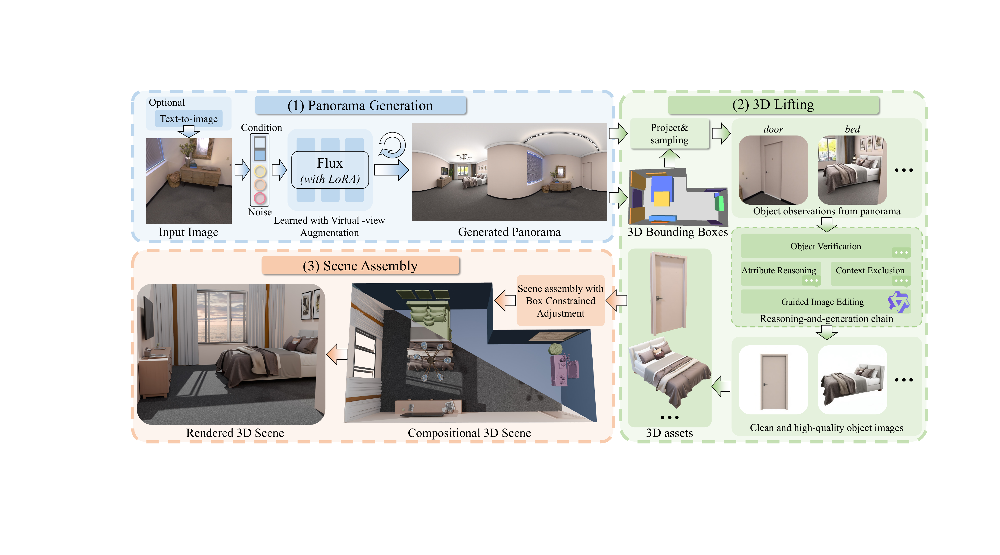
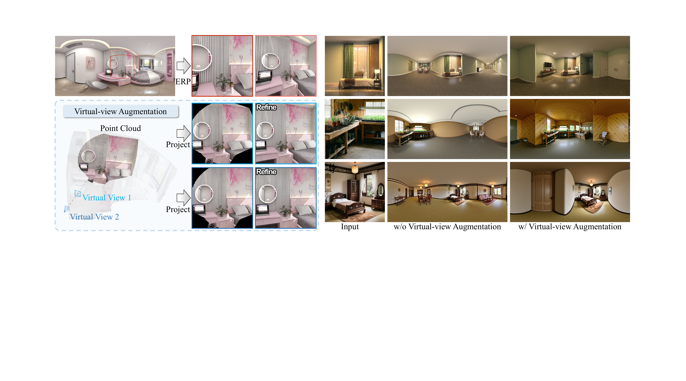

DistScene distills object-level generation into a coherent 3D scene.

Figure 2. Overview of DistScene. A 360° panorama acts as a global blueprint, object observations are refined and lifted into 3D assets, and the assets are assembled into a coherent scene.

Figure 3. Virtual-view Augmentation. Random virtual views rendered from a lifted point cloud reduce the field-of-view and distortion bias in panorama training.
02
Demo
Interactive scene demonstrations will be added here.